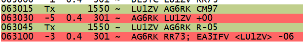

[Date Prev][Date Next][Thread Prev][Thread Next][Date Index][Thread Index]
Re: [NCDXC Chat] DX Spot: LU1ZV 10.130 regular FT8 [Antarctica]
Thanks for the spot...
73,Rob - AG6RK
On Monday, February 27, 2023 at 10:22:43 PM PST, Mike Flowers via Chat <chat@ncdxc.org> wrote:
He’s still there and I worked him calling at 1537 on my waterfall.
Thanks for the spot!!
- 73 and good DX de Mike, K6MKF, NCDXC Life Member
From: Chat <chat-bounces@ncdxc.org> On Behalf Of Richard Jackson via Chat
Sent: Monday, February 27, 2023 21:47
To: Todd KH2TJ <w7tr@outlook.com>
Cc: Chat NCDXC <chat@ncdxc.org>
Subject: Re: [NCDXC Chat] DX Spot: LU1ZV 10.130 regular FT8 [Antarctica]
I called at 1500 Hz, non-F/H. Got him on the first call at 0533 UTC. He was +02 here in the Sierras, he gave my 100w + dipole a -12.
It looks to me like he is running multi-frequencies (291 & 351) and Fox/Hound...? 053330 -2 0.2 291 ~ NR0P RR73; NC6RJ <LU1ZV> -12
But I wasn't, so I didn't move on my response and still got the RR73.
- Richard, NC6RJ
On Feb 27, 2023, at 9:09 PM, Todd KH2TJ via Chat <chat@ncdxc.org> wrote:
I was calling for quite a few times down below 1000hz. Went up to around 1500 and he answered right away...
73, Todd KH2TJ
From: Chat <chat-bounces@ncdxc.org> on behalf of Al N6TA via Chat <chat@ncdxc.org>
Sent: Monday, February 27, 2023 9:07 PM
To: Andrew Calman <acalmanmd@gmail.com>
Cc: Chat NCDXC <chat@ncdxc.org>
Subject: Re: [NCDXC Chat] DX Spot: LU1ZV 10.130 regular FT8 [Antarctica]
Where are you calling to make the contact? I decode at +11 but he is not finding me...
AL
On Mon, Feb 27, 2023 at 8:11 PM Andrew Calman via Chat <chat@ncdxc.org> wrote:
This is the Argentinian Antarctic station. Not busy at all, -07 into my dipole, gave me a -01 with 200w. Answered first call.
Go get him!
73 and good DX,
Andy K6ZP
_______________________________________________
Chat mailing list
Chat@ncdxc.org
http://mail.ncdxc.org/mailman/listinfo/chat_ncdxc.org
_______________________________________________
Chat mailing list
Chat@ncdxc.org
http://mail.ncdxc.org/mailman/listinfo/chat_ncdxc.org
_______________________________________________
Chat mailing list
Chat@ncdxc.org
http://mail.ncdxc.org/mailman/listinfo/chat_ncdxc.org

{kind=link}